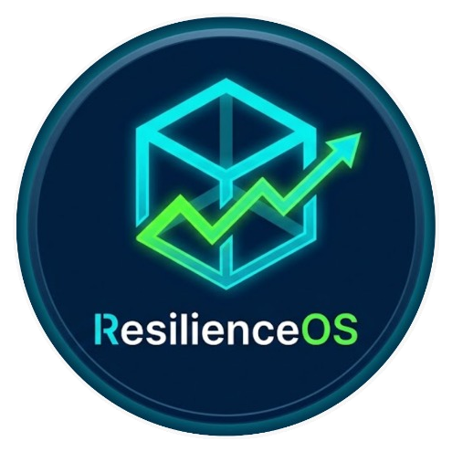

KOBİ'lerin nakit krizini gerçekleşmeden 30 gün önce öngören, krizi çözecek aksiyonu öneren finansal & operasyonel dijital ikiz.
Kontrol Paneline Git →
Nakit Akışı Erken Uyarı
Fatura & Stok Risk Skoru
Şok & Aksiyon Simülatörü